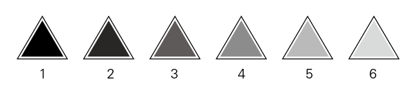

项目介绍
数据可视化，此次项目要求不能出现具体数字以及形象化的图标，只能通过形状、颜色、逻辑和交互行为可视化数据，我选择的题目是中国互联网从2000年至2010年10年的发展变化。
数据
收集和分析大量资料后，我选择了三项具有代表性的数据，分别是网民人数、网页数量以及互联网行业产值。再针对这三项数据分析内在结构，最后数据结构为:
网民人数：男人、女人；
网页数量：企业网页、交易网页、个人网页、政府及教育、其他；
行业产值：网上购物、网上广告、网上游戏、移动互联网、其他。
形状
基于等边三角形的几个特点，我选择了这个图形来表现数据。高和边的固定比例，适合表现内部数据。我一共有6年的数据，等边三角形每个角为60度，每个年份数据可以进行旋转，6组数据可以刚好围绕360度进行比较。除本身的几何特点，三角形本身的寓意包含有一种高科技及未来感。

颜色
网民人数、网页数量、行业产值

结构图
左图为单年数据，右图为多年数据
屏幕截图


鼠标行为
hover: 此三角代表的年份数据；
click: 可进行多年份选中，每次点击相应的年份数据偏移60度。选中顺序及分布则通过黑色三角透明度变化来表现，越先选中的年份，颜色越深。
